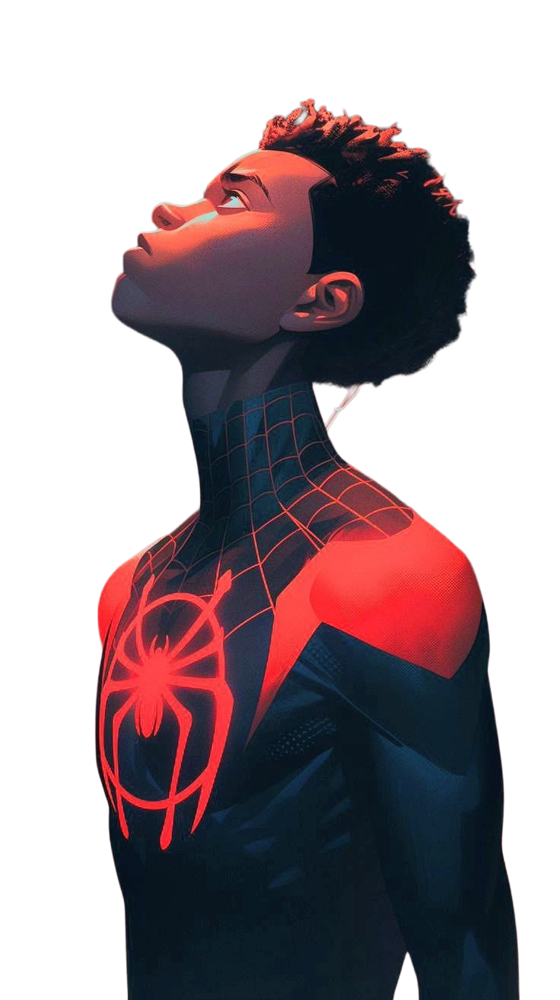
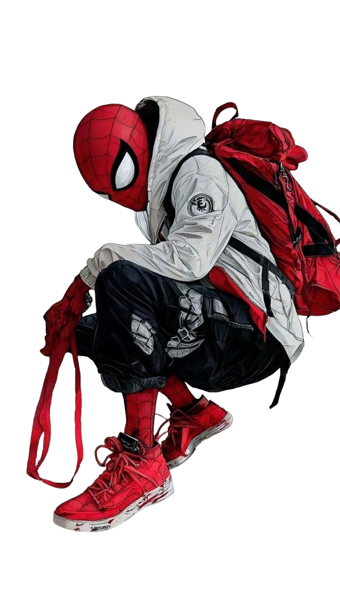
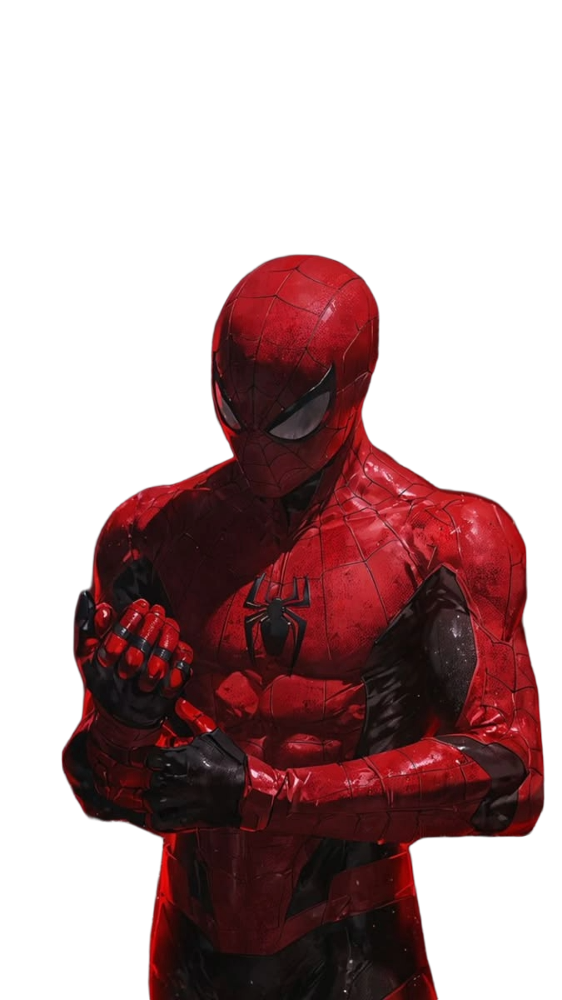

.png)
The Shadow
Operating from the darkness to protect the light. Sometimes the mask isn't just to hide your face, but to protect those you love from the enemies you make. In the cold nights of the city, silence is the loudest weapon.
Scroll to explore the legacy, the responsibility, and the heroes behind the mask.
Operating from the darkness to protect the light. Sometimes the mask isn't just to hide your face, but to protect those you love from the enemies you make. In the cold nights of the city, silence is the loudest weapon.
It’s a leap of faith. You can’t wait for the perfect moment or the exact right time. Miles learned that being Spider-Man isn’t about perfectly replicating the heroes before him; it’s about forging his own path and making the suit his own.


Balancing two lives takes its toll. Between the physics homework, the late-night patrols, and the constant feeling of letting someone down, the backpack isn't the heaviest thing Peter carries. The responsibility is.
A symbol of hope and courage. Whenever the red and blue hero swings through the city skyline, people feel a sense of safety and reassurance. He is more than just a superhero; he represents determination, responsibility, and the belief that anyone can make a difference. No matter how many times he falls, gets beaten down, faces impossible odds, or loses the things he cares about most, he never gives up. Every setback becomes a lesson, and every failure becomes a reason to grow stronger. He rises again and again, not because he is the strongest, but because he refuses to stay down. His true power is not found in his abilities, but in his resilience, his heart, and his unwavering commitment to protecting others. That is what makes him a hero, and that is the true power that inspires millions.
